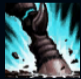
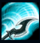
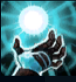
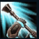
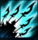

Hecarim
| Hecarim The Shadow Of War | |
|---|---|
| Release date | 18.04.2012 |
| Class | Diver |
| Positions | Jungle |
| Resource | Mana |
| Range type | Melee |
| Adaptive type | Physical |
| Base statistics | |||
| Health | 580 – 2110 | Mana | 277.2 – 1297.2 |
| Health regen. | 7 – 19.75 |
Mana regen. | 6.5 – 16.7 |
| Armor | 36 – 104 | Attack damage | 66 – 120.4 |
| Magic resist. | 32 – 53.25 | Crit. damage | 175% |
| Move. speed | 345 | Attack range | 175 |
Hecarim e o apariție spectrală, jumătate om, jumătate bestie, blestemat să calce mereu în copite sufletele muritorilor. Când Insulele Binecuvântate au fost cuprinse de umbre, acest cavaler mândru a fost zdrobit de forțele malefice ale Cataclismului, împreună cu toți călăreții din subordinea sa. Acum, de fiecare dată când Negura întunecată se răspândește de-a lungul și de-a latul Runeterrei, Hecarim îi conduce pe aceștia într-un atac devastator, strivindu-și inamicii sub copite și lăsându-se îmbătat de plăcerea de a măcelări tot ce-i iese în cale. |  |
CALEA RĂZBOIULUI Hecarim primește daune din atac egale cu un procent din viteza sa de mișcare bonus. |
||
|---|---|---|---|---|
 |
FURIA Hecarim spintecă inamicii din apropiere provocând daune fizice. Dacă Hecarim îi provoacă daune cel puțin unui inamic, daunele pentru folosirile ulterioare ale ''Furiei'' cresc, iar timpul de reactivare scade. |
|||
 |
SPIRITUL GROAZEI Hecarim provoacă daune magice inamicilor din apropiere pentru scurt timp și se vindecă cu un procent din orice daune suferite de aceștia. |
|||
|  |
ATAC DEVASTATOR Hecarim câștigă viteză de mișcare și se poate deplasa prin unități pentru scurt timp. Următorul lui atac împinge ținta înapoi și provoacă daune fizice suplimentare, în funcție de distanța pe care a străbătut-o de la activarea abilității. |
|||
 |
MĂCELUL UMBRELOR Hecarim invocă mai mulți călăreți spectrali și se năpustește înainte, provocând daune magice în linie dreaptă. Când asaltul se încheie, Hecarim creează o undă de șoc, făcând inamicii din apropiere să fugă îngroziți. |